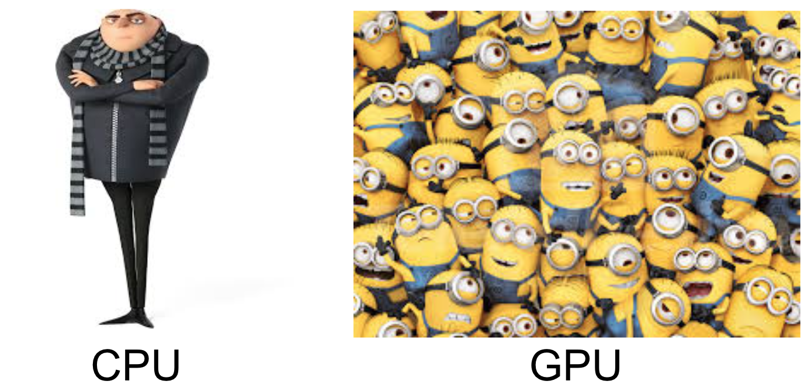

(Towards) Teaching Tech Without A Dreary Deck
We can probably all agree that outreach is an integral albeit oft-neglected part of our teaching and research lives, because not only does it generate interest in the broader community around us, but also it is great for promoting diversity in our research environments down the line. However, as I have come to realize, this is not as exactly easy as it seems to be, especially when you are talking to a young and less technical audience.
A while ago, I was invited to give an introduction to deep learning for natural language processing to highschoolers participating in a hackathon called LingHacks. This was my first time teaching technical material to such a young audience–one that turned into an interesing learning experience for me! I’ve recently come to realize what I have learned preparing for this presentation could be of interest more broadly, so I am writing it down to share my experiences.
Background
LingHacks is a new hackathon focused on computational linguistics (a.k.a. natural language processing) for highschool students, where they spend one day in training (which I was part of), and two days to flesh out their brilliant ideas applying language technology to solving real-world problems.
Before I started preparing my slides, I asked the organizers about my audience’s mathematical background. Here is a brief list of things I got from them that would hopefully be useful for others preparing for similar events:
- Linear algebra
- vectors and their representation in Cartesian coordinates
- matrices
- vector (inner) product
- matrix-vector product
- matrix-matrix product
- Basic algebra and calculus
- logarithmic and exponential functions
- derivatives of functions
- (Slightly more) Advanced calculus
multivariate functions and their derivatives
- Basic probability
- probability mass functions and probability density functions
- conditional probability and marginal probability
Items crossed out are ones I was told highschoolers are not supposed to know of by default. I didn’t end up using most of these anyway–I’ll explain why in a bit.
My Initial Plan and What (probably) Not To Do
Skip if you just want to know what I ended up including in my slides! Skipping this section wouldn’t affect your takeaways in any way.
As you might have inferred from the list of mathematical prerequisites I asked the organizers for, I was going for a pedantic introduction leading up from “shallow learning” (linear classifiers) to deep learning (neural networks). I was planning to follow some of the great tutorials out there, and tailor them to my audience’s technical level by introducing the following things (in this order):
- Linear classifiers
- Connecting them to linear algebra and its geometric interpretations (rotation and translation)
- Loss functions (intuitively measuring the distance between “desired” and “predicted” outputs)
- Optimization of parameters (by waving my hands throughout, to avoid mentioning exactly how multivariate functions work or how to take derivatives, and with the help of the famous gradient descent images from Prof. Andrew Ng’s machine learning course on Coursera, see Figure 1)
- Limitations of linear classifiers (hand-designed features, model capacity, etc.)
- Deep learning to the rescue!
- Stacking linear classifiers!
- … well, we also need nonlinearities to make it more useful (sigmoid, tanh, ReLU, etc.)
- There are so many different kinds of networks (CNN, RNN, etc.), and they can do so many things (NMT and friends)
- Stacking linear classifiers!
- By the way, there are such things called word vectors you’d need to use as your input to these networks (did I mention the “king”-“man”+”woman”=”queen” parallelogram?)
This agenda made perfect sense to me at the time, especially since this is the path my past teaching experiences usually took, which worked reasonably well for classrooms filled with undergraduate and graduate students.1 Fortunately, though, my labmates heard about my plan and stopped me about 20 slides down this path.

Figure 1: What gradient descent on a loss function looks like. (From Prof. Andrew Ng’s machine learning course on Coursera)
What Was Actually Covered in My Slides, and Why
After sharing my plan with my labmates, they quickly pointed out (and I paraphrase, as they were too kind to say this) that I made a big mistake in assuming that what seems to me a natural progression of topics is also going to be intuitive to my audience. Specifically, what I planned is only natural to me because this is the order how I learned them, and that I have spent many more years with linear algebra and multivariate calculus for things to be more intuitive for me. In the eyes of my intended audience, I might as well be teaching them college maths in the first 5-10 minutes of my talk.
This revelation greatly helped me take a step back to really think from the perspective of my audience, and I hope I have done so in a reasonable manner in the end. I have summarized a few points of dos and don’ts for quick reference below, that reflect the rationales behind what I decided to put in my final slides.
- DON’T attempt to build theoretical background as you go. More specifically, don’t imagine that you will bring your audience to the level of comfort you are on with the technical background necessary to understand every single detail. It takes time and practice, so 5-10 minutes in an introductory talk is really not the right place for that.
-
DO ground concepts to objects the audience will definitely be familiar with, and be very concrete. For instance, depending on your audience, “Siri”, “fake news”, and “Google Translate” may or may not be objects they are familiar with. Making connections to what they are comfortable with and/or have access to really goes a long way. High dimensional functions, however visually presented (e.g., Figure 1), is probably a bad example.
Good examples for this might come in many flavors. Two of my favorite examples from the slides are: one for classifying between two “mythical creatures” on planet Earth called “Meow”s and “Woof”s, and the other for introducing language models with an example of two good friends “finishing each other’s __”.
-
DON’T drop jargons/definitions all the time. Actually, don’t even reference them if you can avoid it. Absorbing new information is taxing. It would only be worse if that process is accompanied with a new definition or an acronym every two minutes. This also includes “big” technical terms that could drive your audience out of their comfort zone quickly, which, in my case, could simply mean abstract terms like “rotation and translation in a high-dimensional space”.
-
DO define things at the end. Despite the added cognitive load, technical terms do have the benefit of easy references down the line (instead of saying “that thing that measures how well your predictions fit the desired outcome”, we just say “loss function”, and we can then easily google for “what loss function should I use for X”).
What I have found useful in my experience is presenting the definitions as part of the solution to a problem. Specifically, I would engage the audience by introducing a problem, and encouraging them to think about the solution. As I guide them through the steps to the final solution, they would intuitively understand what role each part plays in the solution, before hearing the definition of it. For instance, one could solve a toy linear classification problem before realizing they just used the concepts of “classes”, “features”, and a “classifier”.
Another place where definitions might be useful is where the audience is encouraged to research further on their own–instead of guessing what search keywords to use (and what they mean in the context), it is always much easier if the presenter could give them quick pointers.
-
DON’T (plan to) talk all the time. Whenever I opened up the floor for my audience to ask questions or voice ideas, I received many great questions that helped me clarify details, and a lot of good ideas that I never would have thought of at first when I was preparing for the presentation. This is also a great way to gauge your audience’s understanding and engagement, because we as presenters should always be mindful of the information gap between us and the audience. If most members of the audience seem confused, do slow down and explain more carefully. If they seem bored, don’t assume–you could be either moving too fast for them to keep up, or too slowly that you’re repeating yourself too much–ask them!
- DO make jokes (or at least interesting metaphors). This is probably obvious to most people, especially if you are giving a presentation of more than 30 minutes. If you are not convinced, try and recall what you’ve learned from the last long technical presentation that is not in your specific domain of expertise where the presenter made no attempt to make a joke. Jokes and interesting metaphors help your audience lighten up, keep them focused, and can even make the explanation of technical matters simpler (see Figure 2). This helps make communication of ideas more effective and more memorable without (I would argue) necessarily forsaking seriousness.

Figure 2: My attempt at explaining the differences between CPUs and GPUs with Despicable Me characters. (One is cunning but really only has so much bandwidth; the other is an army of less sophisticated agents that can achieve a lot in parallel.)
- DON’T make jokes (or references, in general) that only a few people in the audience will be able to understand. We all have the natural tendency to form in-groups with insider jokes. This is fine and bonding when everyone you are talking to is indeed part of your in-group,2 but really puts up an unnecessary barrier when that is not the case. One of the easiest ways to alienate the audience is to include too many references they wouldn’t be able to “get”. Despite our best intentions, not everyone shares the same cultural and historical background, and we should respect that. When you do want to include references with a bit more of a personal preference, it is probably always helpful to make sure they are easily understandable by someone who doesn’t share as much of a background in your references as well (or simply don’t dwell too much on it).
-
DO use a narrative (n=1).3 While it does require some effort to come up with a narrative to chain all items together, I do believe it helped me keep my audience engaged, without losing track of what has been covered and what they can expect next. This functions similarly to having a clear outline in more technical talks, but since mentioning technical terms from the beginning wouldn’t make much sense to my audience (“now, let’s turn to language modeling with RNNs”–probably no), this is the route I ended up taking.
For what it’s worth, I’m going to share the narrative I used to chain things together, which was a corny story about space travels. It starts with someone visiting the earth, who was warned about two mythical creatures, one being highly dangerous and the other one friendly. Having no experience with these creatures, the protagonist could only refer to the encyclopedia they’re carrying around, and built a linear classifier with features described in it. Here I took a minor digression to motivate the use of deep learning to build features hierarchically in a more complex real-world task–fake news identification. Returning to the space travel story, the next challenge the protagonist faces is making sense of human words (word vectors and the distributional hypothesis). But just making sense of words is clearly not enough, because human languages consist of ordered sequences of words (“Man bites dog” ≠ “Dog bites man”), where sequence length is also not deterministic. This leads to RNNs being one possible solution, where it is also great to talk about language models (motivated as a sequence classification task–remember linear classifiers?). With a vague reference to Babel fish, this naturally segues to shiny new sequence-to-sequence applications like neural machine translation, neural dialog systems, and image captioning systems. The story stops here, after which I briefly talked about recursive neural nets, (1D) convolutional networks, and some practical notes about deep learning. None of the sci-fi references were articulated during the presentation, but that didn’t seem to matter too much.
I sincerely hope that these notes can help make your next presentation to a less technical audience an engaging and successful one!
My Slides
My slides are available on Google Drive under the Creative Commons Attribution-ShareAlike 4.0 International License (CC BY-SA 4.0).
Acknowledgements
I wouldn’t have been part of this experience in the first place without the invitation from LingHacks organizers, so thank you for inviting me!
The final slides wouldn’t have been the way they are right now without the great suggestions from my labmates, Siva Reddy and Urvashi Khandelwal, to whom I’m immensely grateful!
Also special thanks to Yuhao Zhang, Siva, and Urvashi for providing comments and feedback on earlier drafts of this post.
Footnotes
-
I taught a few review sessions before exams, which usually involved going over topics in the way they were unfolded in class (each the prerequisite to understand the next in most cases), highlighting a few points with examples illustrating all the technical details, and a lot of interactions with the audience [1,2,3]. Some of my internal tutorials/talks were also structured similarly, as you would expect a technical talk to be. ↩
-
I have fond recollections of a bunch of Stanford NLPers surrounding a fire pit by the sea talking about “adding layers (of firewood)”, “feeding in more data (newspapers)”, “adding more compute and more supervision (fanning in more air)”, and “doing architectural search (of firewood)”. These references probably make no sense to you if you don’t work with neural networks/deep learning, and that’s okay. ↩
-
I have only tried this once and it seemed to work okay, thus the “n=1” note about sample size. ↩
 Unless otherwise mentioned, you are free to share my posts under the Creative Commons Attribution-ShareAlike 4.0 International License (CC BY-SA 4.0).
blog comments powered by Disqus
Unless otherwise mentioned, you are free to share my posts under the Creative Commons Attribution-ShareAlike 4.0 International License (CC BY-SA 4.0).
blog comments powered by Disqus